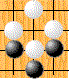

Agora, eu irei descrever a regra adicional chamada de Ko - que significa eternidade em japonês.
Essa é a última regra para lembrar. Se você ler esta página, você terá entendido todas as regras de Go.
O conceito de Ko é um pouco mais difícil que as regras anteriormente descritas.
Boa sorte!
* As brancas não jogam sozinhas aqui.
Uma pedra branca está em Atari. Capture-a
Já a capturou? Agora olhe cuidadosamente o tabuleiro.
Você verá uma pedra preta que acabou de ficar em Atari!
Poderia parecer que as brancas poderiam capturá-la, mas...
O que acontecerá se as brancas capturarem-na?
Resultará na mesma posição do tabuleiro do início.
Ou seja, ambas pretas e brancas iriam se capturar para sempre!
Portanto, os movimentos que produzem a mesma posição no tabuleiro são proibidas.
Esse é o conceito do Ko(eternidade).
No tabuleiro acima, você pode também fazer os movimentos pelas brancas. Então, tente pegar a pedra preta do meio..
Você verá a mensagem - Illegal(Ko).
Nunca mais as brancas poderão capturar aquela pedra preta?
Elas poderão. Porém elas precisam antes jogar em outro lugar.
Assim, isso ocasionará uma posição no tabuleiro diferente. Portanto, você pode recapturar a pedra do Ko uma vez que você jogue em outro lugar primeiro.Faça um movimento aonde você quiser para as brancas no tabuleiro abaixo.
E faça também um movimento com as pretas também.Agora é a vez das brancas. Elas podem agora pegar a pedra preta de volta.
Confirme você mesmo no tabuleiro acima.
Agora é a vez das pretas. Entretanto elas não podem capturar a pedra branca imediatamente.
Confirme você mesmo no tabuleiro. Você verá de novo a mensagem - Illegal(Ko).
Elas podem capturar a pedra branca se elas fizerem movimentos em outros lugares como as brancas fizeram.
No tabuleiro acima, você pode fazer movimentos pelas brancas e pelas pretas.
Tente entender o conceito da regra do Ko jogando nele.
Você pode desfazer seus movimentos pressionando o botão undo (desfazer).
Como o Ko aparece numa batalha real?
Olhe à esquerda. Cinco pedras pretas na parte de cima do tabuleiro estão prestes a morrer.
Primeiro, capture uma pedra branca jogando em E8.
Agora, a batalha do Ko começou!
Cinco pedras brancas estão em perigo e elas não podem capturar a pedra preta jogando em D8 porque estamos num caso de Ko.
Então, elas jogam em algum lugar onde as pretas não podem ignorar como por exemplo E2.
Como 8 pedras pretas serão capturadas se isso for ignorado, as pretas jogam em E1.
Agora, as brancas podem capturar a pedra do Ko de volta jogando em D8.
Então, as pretas irão jogar num lugar onde as brancas não podem ignorar, como por exemplo B4. Se as brancas responderemem A4, as pretas podem capturar as pedras do Ko de novo jogando em E8
Nós chamamos isso de uma batalha de Ko.
Essa batalha de Ko termina quando um dos lados ignora a ameaça do oponente de matar 5 pedras no alto do tabuleiro.
Para o perdedor, a perda de 5 pedras é uma perda muito grande.
Em vez disso, ele pode fazer dois movimentos sucessivos em outro lugar e ganhar muito lá.
A coisa mais importante é: para ganhar uma batalha de Ko, ache uma ameaça - um lugar onde você pode ganhar muito com 2 movimentos sucessivos. Se o oponente não permitir, a batalha de Ko continua. Se ele ignorar a ameaça, você pode fazer dois movimentos sucessivos enquanto ele ganha o Ko.
Ko é difícil pois uma batalha de Ko envolve muitos movimentos estratégicos no tabuleiro todo.
Para os iniciantes, apenas se lembre que movimentos que produzem a mesma posição no tabuleiro são proibidos. Essa animação é cortesia de Daniel Dheaud.
É isso. A regra do Ko, não permite que situações como essa aconteçam.
Ko não é apenas uma regra restritiva do Go, mas sim uma emoção a mais numa partida.
 Próximo
Próximo
 Conteúdo
Conteúdo